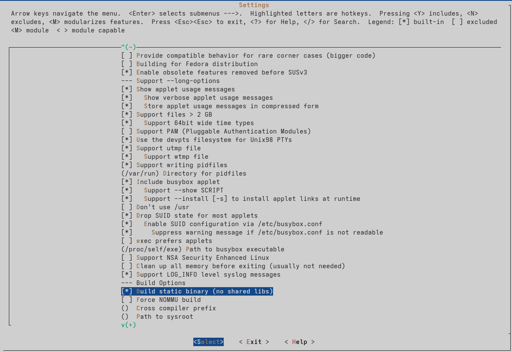
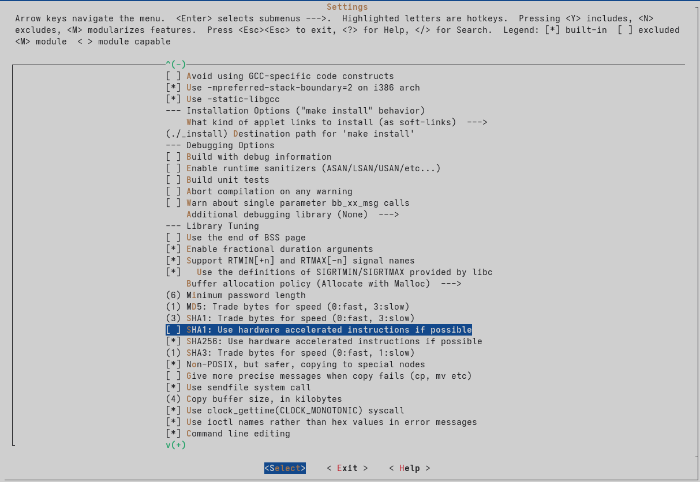

Segunda parte del proyecto Linux Embebido en OrangePi Zero 3 - Allwinner H618 usando Docker
Aqui se continuará con la guia de desarrollo de Linux Embebido en la OrangePi Zero 3, en la sección anterior preparamos el entorno de trabajo y compilamos los dos primeros componentes del sistema:
- U-Boot (bootloader)
- Kernel de Linux
En esta ocasión nos centraremos en crear un rootfs que será nuestro sistema de archivos raíz donde formaremos la arquitectura de directorios convencional de Linux, ya agregremos el sistema de arranque y porgramas básicos apyandonos del proyecto Busybox.
Estructura principal
Nos dirigeremos a nuestra carpeta principal del proyecto, y crearemos el directorio raíz rootfs
mkdir -p rootfs
Las carpetas se verian asi:
arm-trusted-firmware linux-orangepi rootfs u-boot
Despues entramos a este nuevo directorio.
cd rootfs
Creamos la estructura de directorios
mkdir -p {dev,proc,sys,etc,bin,sbin,tmp,usr/{bin,sbin},var,home}
chmod 1777 tmp
Creamos dispositivos basicos en dev.
Estando dentro de rootfs nos dirigimos a la capeta dev creada en el paso anterior, y ahí creamos los dispositivos principales.
cd dev
sudo mknod -m 622 console c 5 1
sudo mknod -m 666 null c 1 3
Estos dispositivos son necesarios para el funcionamiento de nuestro sistema, de lo contrario no podrá arrancar.
Busybox
Ahora volvemos a la raiz de nuestro proyecto y descargaremos busybox desde su repositorio.
git clone https://github.com/mirror/busybox.git --depth 1
cd busybox
Esto descargará el proyecto y nos pondrá dentro del directorio.
El siguiente paso es crear la configuración.
make defconfig
make menuconfig
Dentro del menu editamos la configuración, debemos activar la compilación estatica para no tener problema de dependencias.
Settings → Build static binary (no shared libs)
La activamos dando la tecla [space].

Tambien debemos desactivar la opcion de aceleración SHA1.

Salimos y guardamos.
Iniciamos la compilación
El proceso puede durar algunos minutos dependiendo de tu maquina.
make ARCH=arm64 CROSS_COMPILE=aarch64-linux-gnu- -j$(nproc)
Si el proceso fue exitoso instalamos busybox en nuestro rootfs.
Nota
Asegurate que la ruta del rootfs sea la correcta, de lo contrario podria no instalarse o crear problemas.
make ARCH=arm64 CROSS_COMPILE=aarch64-linux-gnu- INSTALL_MOD_PATH=../rootfs-arm64 modules_install
Ahora en nuestro directorio rootfs deberiamos tener instalado busybox, puedes comprobarlo, deberias tener este archivo.
rootfs/bin/busybox
Creando el Init
Dentro de tu rootfs, crea un archivo init en la raiz principal.
cd rootfs
touch init
Ahora abrimos con el editor este archivo y agregamos el siguiente contenido inicial.
#!/bin/sh
# Montar sistemas de archivos necesarios
mount -t proc proc /proc
mount -t sysfs sysfs /sys
mount -t devtmpfs devtmpfs /dev
# Mensaje de inicio
echo "Iniciando sistema..."
# Lanzar shell interactiva
exec /bin/sh
Este script sera el proceso principal con el cual vamos a interactuar.
Hacemos el init ejecutable.
chmod +x init
Instalando modulos del kernel en el rootfs
Nos dirigimos a la carpeta linux-orangepi y ejecutamos el siguiente comando, de la misma manera debemos asegurarnos que la ruta del rootfs sea la correcta
make ARCH=arm64 CROSS_COMPILE=aarch64-linux-gnu- modules_install INSTALL_MOD_PATH=../rootfs
Próximos pasos
En la siguiente sección veremos como crear la configuracion para el aranque y empaquetar todo para tener nuestro sistema Linux embebido listo para ejecutar en nuestra OrangePi Zero 3.